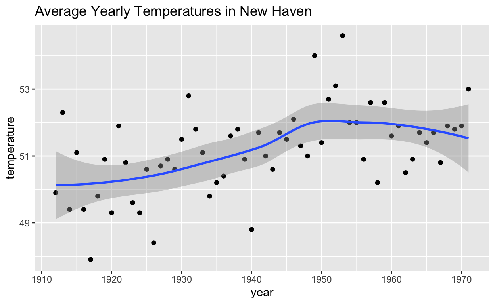

datsci_04: Inference and Modeling
Introduction and Welcome!
Usage: This tutorial accompanies Introduction to Data Science by Prof Rafael Irizarry. It contains material from the textbook which is offered under a CC BY-NC-SA 4.0.
Welcome to Data Science: Inference and Modeling!
We’re excited to have you join us in this course, which is designed to teach you inference and modeling, two of the most widely used statistical tools in data analysis.
Course Overview
This is the fourth in a series of courses in the Introduction to Data Science program. The courses in the program are designed to prepare you to do data analysis in , from simple computations to machine learning. The courses are designed to be taken in order. A prerequisite for this course is courses 1 and 2 of the series or equivalent knowledge of basic coding and data visualization. We recommend that you complete the first three courses in the series (Data Science: Basics (datsci_01), Data Science: Visualization (datsci_02), and Data Science: Probability (datsci_03)) before taking this course.
The textbook for the Data Science course series is freely available online. This course corresponds to the Probability section of textbook, starting here.
This course assumes you are comfortable with basic math, algebra, and logical operations. We have partnered with DataCamp for some assignments in that allow you to program directly in a browser-based interface. You will further have access to additional exercises to be completed on your local installation of .
For in-class students enrolled in my University course, we partnered with DataCamp for some assignments in R that allow you to program directly in a browser-based interface. There are also some assignments that require a local installation of . If you are not in-class, you will need to obtain a subscription to DataCamp.
Using a combination of a guided introduction through short video lectures and more independent in-depth exploration, you will get to practice your new skills on real-life applications.
Statistical inference and modeling are indispensable for analyzing data affected by chance, and thus essential for data scientists. In this course, you will learn these key concepts through a motivating case study on election forecasting.
This course will show you how inference and modeling can be applied to develop the statistical approaches that make polls an effective tool and we’ll show you how to do this using R. You will learn concepts necessary to define estimates and margins of errors and learn how you can use these to make predictions relatively well and also provide an estimate of the precision of your forecast.
Once you learn this you will be able to understand two concepts that are ubiquitous in data science: confidence intervals and p-values.
Finally, to understand statements about the probability of a candidate winning, you will learn about Bayesian modeling. At the end of the course, we will put it all together to recreate a simplified version of an election forecast model and apply it to the 2016 US presidential election.
This course builds upon probability theory, covered in the previous course in this series (datsci_03).
The class notes for this course series can be found in Professor Irizarry’s freely available Introduction to Data Science book. The textbook is also freely available in PDF format on Leanpub.
This course corresponds to the textbook chapters Statistical Inference and Statistical Models.
In this course, you will learn:
- The concepts necessary to define estimates and margins of errors of populations, parameters, estimates, and standard errors in order to make predictions about data
- How to use models to aggregate data from different sources
- The very basics of Bayesian statistics and predictive modeling
Course overview
Section 1: Parameters and Estimates
- You will learn how to estimate population parameters.
Section 2: The Central Limit Theorem in Practice
- You will apply the central limit theorem to assess how close a sample estimate is to the population parameter of interest.
Section 3: Confidence Intervals and p-Values
- You will learn how to calculate confidence intervals and learn about the relationship between confidence intervals and p-values.
Section 4: Statistical Models
- You will learn about statistical models in the context of election forecasting.
Section 5: Bayesian Statistics
- You will learn about Bayesian statistics through looking at examples from rare disease diagnosis and baseball.
Section 6: Election Forecasting
- You will learn about election forecasting, building on what you’ve learned in the previous sections about statistical modeling and Bayesian statistics.
Section 7: Association Tests
- You will learn how to use association and chi-squared tests to perform inference for binary, categorical, and ordinal data through an example looking at research funding rates.
Introduction to Inference
Textbook link
The content is discussed within the textbook section - 15.1 Polls.
Course overview
In this course, we will learn:
statistical inference, the process of deducing characteristics of a population using data from a random sample
the statistical concepts necessary to define estimates and margins of errors
how to forecast future results and estimate the precision of our forecast
how to calculate and interpret confidence intervals and p-values
Key Points
Information gathered from a small random sample can be used to infer characteristics of the entire population.
Opinion polls are useful when asking everyone in the population is impossible.
A common use for opinion polls is determining voter preferences in political elections for the purposes of forecasting election results.
The spread of a poll is the estimated difference between support two candidates or options.
Meet the Course Instructor

Rafael Irizarry is a Professor of Biostatistics and Computational Biology at the Dana-Farber Cancer Institute and a Professor of Biostatistics at Harvard Chan School of Public Health. He has been analyzing data, from sound signals to genomic measurements, for over 20 years.
Professor Irizarry teaches a popular Data Science course at Harvard and has developed several online courses on data analysis that are offered by HarvardX. These online courses, divided into the Data Analysis for the Life Sciences series and Genomics Data Analysis series, have been completed by thousands of students and much of the material is included in a book with a freely available online version.
Webpage: http://rafalab.github.io
Essential Course Information
Course Syllabus
The course syllabus contains a more comprehensive version of the information below - but if you don’t read the syllabus, please read this!
Course Structure
This is a self-paced course. You can work on it with your own timeline in mind. However, we suggest that you work on a section per week, and it will take you 2 - 4 hours per week.
Check the course home page for important dates. If you are interested in pursuing a Verified Certificate, you will need to upgrade before the date listed on the home page and finish all assignments before course close.
Grading
Assignments in the course allow you to practice your coding skills using the DataCamp platform. R is a flexible programming language designed partly for readability and ease of programming.
HarvardX has partnered with a platform called DataCamp to create programming assignments that you can do online. There is no need to install anything on your computer. You will be given a set of code to modify and run in your browser. You can take as many attempts as you need. When your code works correctly, you will be awarded points. You can also request hints, which will help you out, but hints decrease your point total. Remember that you can always go to the Discussion Board for help that doesn’t cost points.
Passing Rate
The passing rate is 70%. You must sign up for a Verified Certificate and earn a grade of 70% of higher in order to obtain a certificate for this course.
Installing and R Studio
Installing R
If you want to install to work on your own computer, you can download it freely from the Comprehensive R Archive Network (CRAN). Note that CRAN makes several versions of available: versions for multiple operating systems and releases older than the current one. You want to read the CRAN instructions to assure you download the correct version. If you need further help, you can try the following resources:
Installing RStudio
RStudio is an integrated development environment (IDE). We highly recommend installing and using RStudio to edit and test your code. You can install RStudio through the RStudio website. Their cheatsheet is a great resource. You need to install first.
Pre-Course Survey
Insert Survey Link here
If you cannot see the survey above, click this link to access it in a new window.
Section 1 Overview
Section 1 introduces you to parameters and estimates.
After completing Section 1, you will be able to:
Understand how to use a sampling model to perform a poll.
Explain the terms population, parameter, and sample as they relate to statistical inference.
Use a sample to estimate the population proportion from the sample average.
Calculate the expected value and standard error of the sample average.
There is 1 assignments that use the DataCamp platform for you to practice your coding skills.
We encourage you to use to interactively test out your answers and further your learning.
1 Sampling Model Parameters and Estimates
Textbook link
The content is discussed within the textbook section - 15.1.1 The sampling model for polls and the first part of the textbook section - 15.2 Populations, samples, parameters, and estimates.
Key Points
The task of statistical inference is to estimate an unknown population parameter using observed data from a sample.
In a sampling model, the collection of elements in the urn is called the population.
A parameter is a number that summarizes data for an entire population.
A sample is observed data from a subset of the population.
An estimate is a summary of the observed data about a parameter that we believe is informative. It is a data-driven guess of the population parameter.
We want to predict the proportion of the blue beads in the urn, the parameter 𝑝. The proportion of red beads in the urn is 1 − 𝑝 and the spread is 2𝑝 − 1.
The sample proportion is a random variable. Sampling gives random results drawn from the population distribution.
Code: Function for taking a random draw from a specific urn
The dslabs package includes a function for taking a random draw of size 𝑛 from the urn described in the video:
library(tidyverse)
library(dslabs)
take_poll(25) # draw 25 beadsThe Sample Average
Textbook link
The content is discussed within the textbook section - 15.2.1 The sample average and the first part of the textbook section - 15.2.2 Parameters.
Key Points
Many common data science tasks can be framed as estimating a parameter from a sample.
We illustrate statistical inference by walking through the process to estimate 𝑝. From the estimate of 𝑝, we can easily calculate an estimate of the spread, 2𝑝−1.
Consider the random variable 𝑋 that is 1 if a blue bead is chosen and 0 if a red bead is chosen. The proportion of blue beads in 𝑁 draws is the average of the draws 𝑋1,…,𝑋𝑁.
Polling versus Forecasting
Textbook link
The content is discussed within the textbook section - 15.2.3 Polling versus forecasting.
Key Points
A poll taken in advance of an election estimates 𝑝 for that moment, not for election day.
In order to predict election results, forecasters try to use early estimates of 𝑝 to predict 𝑝 on election day. We discuss some approaches in later sections.
Properties of Our Estimate
Clarification
At 2:47, the audio states that the SE is “0.15, or 1.5 percentage points”. The audio should state that the SE is 0.015. The percentage shown on the slide is correct, and the transcript has been corrected.
Textbook link
The content is discussed within the textbook section - 15.2.4 Properties of our estimate: expected value and standard error.
Key Points
1.1 Assessment: Parameters and Estimates
Insert assessment here
Section 2 Overview
In Section 2, you will look at the Central Limit Theorem in practice.
After completing Section 2, you will be able to:
There is 1 assignment that uses the DataCamp platform for you to practice your coding skills.
We encourage you to use to interactively test out your answers and further your learning.
2. The Central Limit Theorem in Practice
Textbook link
The content is discussed within the textbook section - 15.4 Central Limit Theorem in practice.
Key Points
Code: Computing the probability of 𝑋¯ being within .01 of 𝑝
X_hat <- 0.48
se <- sqrt(X_hat*(1-X_hat)/25)
pnorm(0.01/se) - pnorm(-0.01/se)2. Margin of Error
Textbook link
The content is discussed within the textbook section - 15.4 Central Limit Theorem in practice.
Key Points
2. A Monte Carlo Simulation for the CLT
Textbook link
The content is discussed within the textbook section - 15.4.1 A Monte Carlo simulation.
Key Points
Code: Monte Carlo simulation using a set value of p
p <- 0.45 # unknown p to estimate
N <- 1000
# simulate one poll of size N and determine x_hat
x <- sample(c(0,1), size = N, replace = TRUE, prob = c(1-p, p))
x_hat <- mean(x)
# simulate B polls of size N and determine average x_hat
B <- 10000 # number of replicates
N <- 1000 # sample size per replicate
x_hat <- replicate(B, {
x <- sample(c(0,1), size = N, replace = TRUE, prob = c(1-p, p))
mean(x)
})Code: Histogram and QQ-plot of Monte Carlo results
library(tidyverse)
library(gridExtra)
p1 <- data.frame(x_hat = x_hat) %>%
ggplot(aes(x_hat)) +
geom_histogram(binwidth = 0.005, color = "black")
p2 <- data.frame(x_hat = x_hat) %>%
ggplot(aes(sample = x_hat)) +
stat_qq(dparams = list(mean = mean(x_hat), sd = sd(x_hat))) +
geom_abline() +
ylab("X_hat") +
xlab("Theoretical normal")
grid.arrange(p1, p2, nrow=1)2. The Spread
Textbook link
The content is discussed within the textbook section - 15.4.2 The spread.
Key Points
2. Bias: Why Not Run a Very Large Poll?
Textbook link
The content is discussed within the textbook section - 15.4.3 Bias: why not run a very large poll?.
Key Points
An extremely large poll would theoretically be able to predict election results almost perfectly.
These sample sizes are not practical. In addition to cost concerns, polling doesn’t reach everyone in the population (eventual voters) with equal probability, and it also may include data from outside our population (people who will not end up voting).
These systematic errors in polling are called bias. We will learn more about bias in the future.
Code: Plotting margin of error in an extremely large poll over a range of values of p
library(tidyverse)
N <- 100000
p <- seq(0.35, 0.65, length = 100)
SE <- sapply(p, function(x) 2*sqrt(x*(1-x)/N))
data.frame(p = p, SE = SE) %>%
ggplot(aes(p, SE)) +
geom_line()2.1 Assessment: Introduction to Inference
Insert assessment here
Section 3 Overview
In Section 3, you will look at confidence intervals and p-values.
After completing Section 3, you will be able to:
Calculate confidence intervals of difference sizes around an estimate.
Understand that a confidence interval is a random interval with the given probability of falling on top of the parameter.
Explain the concept of “power” as it relates to inference.
Understand the relationship between p-values and confidence intervals and explain why reporting confidence intervals is often preferable.
There is 1 assignment that uses the DataCamp platform for you to practice your coding skills.
We encourage you to use to interactively test out your answers and further your learning.
3. Confidence Intervals
Corrections
Textbook link
The content is discussed within the textbook section - 15.6 Confidence intervals.
Key Points
Code: geom_smooth confidence interval example
The shaded area around the curve is related to the concept of confidence intervals.
data("nhtemp")
data.frame(year = as.numeric(time(nhtemp)), temperature = as.numeric(nhtemp)) %>%
ggplot(aes(year, temperature)) +
geom_point() +
geom_smooth() +
ggtitle("Average Yearly Temperatures in New Haven")
Code: Monte Carlo simulation of confidence intervals
Note that to compute the exact 95% confidence interval, we would use qnorm(.975) * SE_hat instead of 2 * SE_hat.
p <- 0.45
N <- 1000
X <- sample(c(0,1), size = N, replace = TRUE, prob = c(1-p, p)) # generate N observations
X_hat <- mean(X) # calculate X_hat
SE_hat <- sqrt(X_hat*(1-X_hat)/N) # calculate SE_hat, SE of the mean of N observations
c(X_hat - 2*SE_hat, X_hat + 2*SE_hat) # build interval of 2*SE above and below meanCode: Solving for 𝑧 with qnorm
z <- qnorm(0.995) # calculate z to solve for 99% confidence interval
pnorm(qnorm(0.995)) # demonstrating that qnorm gives the z value for a given probability
pnorm(qnorm(1-0.995)) # demonstrating symmetry of 1-qnorm
pnorm(z) - pnorm(-z) # demonstrating that this z value gives correct probability for interval3. A Monte Carlo Simulation for Confidence Intervals
Textbook link
The content is discussed within the textbook section - 15.6.1 A Monte Carlo simulation.
Key Points
We can run a Monte Carlo simulation to confirm that a 95% confidence interval contains the true value of 𝑝 95% of the time.
A plot of confidence intervals from this simulation demonstrates that most intervals include 𝑝, but roughly 5% of intervals miss the true value of 𝑝.
Code: Monte Carlo simulation
Note that to compute the exact 95% confidence interval, we would use qnorm(.975) * SE_hat instead of 2 * SE_hat.
B <- 10000
inside <- replicate(B, {
X <- sample(c(0,1), size = N, replace = TRUE, prob = c(1-p, p))
X_hat <- mean(X)
SE_hat <- sqrt(X_hat*(1-X_hat)/N)
between(p, X_hat - 2*SE_hat, X_hat + 2*SE_hat) # TRUE if p in confidence interval
})
mean(inside)3. The Correct Language
Textbook link
The content is discussed within the textbook section - 15.6.2 The correct language.
Key Points
The 95% confidence intervals are random, but 𝑝 is not random.
95% refers to the probability that the random interval falls on top of 𝑝.
It is technically incorrect to state that 𝑝 has a 95% chance of being in between two values because that implies 𝑝 is random.
3. Power
Note: There is an error in the code in the video at 0:10. Use the code below the video instead.
Textbook link
The content is discussed within the textbook section - 15.8 Power.
Key Points
If we are trying to predict the result of an election, then a confidence interval that includes a spread of 0 (a tie) is not helpful.
A confidence interval that includes a spread of 0 does not imply a close election, it means the sample size is too small.
Power is the probability of detecting an effect when there is a true effect to find. Power increases as sample size increases, because larger sample size means smaller standard error.
Code: Confidence interval for the spread with sample size of 25
Note that to compute the exact 95% confidence interval, we would use c(-qnorm(.975), qnorm(.975)) instead of 1.96.
N <- 25
X_hat <- 0.48
(2*X_hat - 1) + c(-2, 2)*2*sqrt(X_hat*(1-X_hat)/N)p-Values
Textbook link
The content is discussed within the textbook section - 15.9 p-values.
Key Points
The null hypothesis is the hypothesis that there is no effect. In this case, the null hypothesis is that the spread is 0, or 𝑝 = 0.5.
The p-value is the probability of detecting an effect of a certain size or larger when the null hypothesis is true.
We can convert the probability of seeing an observed value under the null hypothesis into a standard normal random variable. We compute the value of 𝑧 that corresponds to the observed result, and then use that 𝑧 to compute the p-value.
If a 95% confidence interval does not include our observed value, then the p-value must be smaller than 0.05.
It is preferable to report confidence intervals instead of p-values, as confidence intervals give information about the size of the estimate and p-values do not.
Code: Computing a p-value for observed spread of 0.02
N <- 100 # sample size
z <- sqrt(N) * 0.02/0.5 # spread of 0.02
1 - (pnorm(z) - pnorm(-z))Another Explanation of p-Values
The p-value is the probability of observing a value as extreme or more extreme than the result given that the null hypothesis is true.
In the context of the normal distribution, this refers to the probability of observing a Z-score whose absolute value is as high or higher than the Z-score of interest.
Suppose we want to find the p-value of an observation 2 standard deviations larger than the mean. This means we are looking for anything with ∣𝑧∣ ≥ 2. ∣z∣ ≥ 2
Graphically, the p-value gives the probability of an observation that’s at least as far away from the mean or further. This plot shows a standard normal distribution (centered at z = 0 with a standard deviation of 1). The shaded tails are the region of the graph that are 2 standard deviations or more away from the mean.

The right tail can be found with 1-pnorm(2). We want to have both tails, though, because we want to find the probability of any observation as far away from the mean or farther, in either direction. (This is what’s meant by a two-tailed p-value.) Because the distribution is symmetrical, the right and left tails are the same size and we know that our desired value is just 2*(1-pnorm(2)).
Recall that, by default, pnorm() gives the CDF for a normal distribution with a mean of 𝜇 = 0 and standard deviation of 𝜎 = 1. To find p-values for a given z-score z in a normal distribution with mean mu and standard deviation sigma, use 2*(1-pnorm(z, mu, sigma)) instead.
Assessment 3.1: Confidence Intervals and p-Values
Insert assessment here
Section 4 Overview
In Section 4, you will look at statistical models in the context of election polling and forecasting.
After completing Section 4, you will be able to:
Understand how aggregating data from different sources, as poll aggregators do for poll data, can improve the precision of a prediction.
Understand how to fit a multilevel model to the data to forecast, for example, election results.
Explain why a simple aggregation of data is insufficient to combine results because of factors such as pollster bias.
Use a data-driven model to account for additional types of sampling variability such as pollster-to-pollster variability.
There is 1 assignment that uses the DataCamp platform for you to practice your coding skills.
We encourage you to use to interactively test out your answers and further your learning.
Poll Aggregators
Textbook link
The content is discussed within the textbook section - 16. Statistical models and the textbook section - 16.1 Poll aggregators
Key Points
Poll aggregators combine the results of many polls to simulate polls with a large sample size and therefore generate more precise estimates than individual polls.
Polls can be simulated with a Monte Carlo simulation and used to construct an estimate of the spread and confidence intervals.
The actual data science exercise of forecasting elections involves more complex statistical modeling, but these underlying ideas still apply.
Code: Simulating polls
Note that to compute the exact 95% confidence interval, we would use qnorm(.975) * SE_hat instead of 2 * SE_hat.
d <- 0.039
Ns <- c(1298, 533, 1342, 897, 774, 254, 812, 324, 1291, 1056, 2172, 516)
p <- (d+1)/2
# calculate confidence intervals of the spread
confidence_intervals <- sapply(Ns, function(N){
X <- sample(c(0,1), size=N, replace=TRUE, prob = c(1-p, p))
X_hat <- mean(X)
SE_hat <- sqrt(X_hat*(1-X_hat)/N)
2*c(X_hat, X_hat - 2*SE_hat, X_hat + 2*SE_hat) - 1
})
# generate a data frame storing results
polls <- data.frame(poll = 1:ncol(confidence_intervals),
t(confidence_intervals), sample_size = Ns)
names(polls) <- c("poll", "estimate", "low", "high", "sample_size")
pollsCode: Calculating the spread of combined polls
Note that to compute the exact 95% confidence interval, we would use qnorm(.975) instead of 1.96.
d_hat <- polls %>%
summarize(avg = sum(estimate*sample_size) / sum(sample_size)) %>%
.$avg
p_hat <- (1+d_hat)/2
moe <- 2*1.96*sqrt(p_hat*(1-p_hat)/sum(polls$sample_size))
round(d_hat*100,1)
round(moe*100, 1)Pollsters and Multilevel Models
Textbook link
The content is discussed within the textbook section - 16.1 Poll aggregators
Key Points
Different poll aggregators generate different models of election results from the same poll data. This is because they use different statistical models.
We will use actual polling data about the popular vote from the 2016 US presidential election to learn the principles of statistical modeling.
Poll Data and Pollster Bias
Textbook link
The content is discussed within the textbook section - 16.1.1 Poll data and the textbook section - 16.1.2 Pollster bias
Key Points
Code: Generating simulated poll data
library(dslabs)
data(polls_us_election_2016)
names(polls_us_election_2016)
# keep only national polls from week before election with a grade considered reliable
polls <- polls_us_election_2016 %>%
filter(state == "U.S." & enddate >= "2016-10-31" &
(grade %in% c("A+", "A", "A-", "B+") | is.na(grade)))
# add spread estimate
polls <- polls %>%
mutate(spread = rawpoll_clinton/100 - rawpoll_trump/100)
# compute estimated spread for combined polls
d_hat <- polls %>%
summarize(d_hat = sum(spread * samplesize) / sum(samplesize)) %>%
.$d_hat
# compute margin of error
p_hat <- (d_hat+1)/2
moe <- 1.96 * 2 * sqrt(p_hat*(1-p_hat)/sum(polls$samplesize))
# histogram of the spread
polls %>%
ggplot(aes(spread)) +
geom_histogram(color="black", binwidth = .01)Code: Investigating poll data and pollster bias
# number of polls per pollster in week before election
polls %>% group_by(pollster) %>% summarize(n())
# plot results by pollsters with at least 6 polls
polls %>% group_by(pollster) %>%
filter(n() >= 6) %>%
ggplot(aes(pollster, spread)) +
geom_point() +
theme(axis.text.x = element_text(angle = 90, hjust = 1))
# standard errors within each pollster
polls %>% group_by(pollster) %>%
filter(n() >= 6) %>%
summarize(se = 2 * sqrt(p_hat * (1-p_hat) / median(samplesize)))Data-Driven Models
Textbook link
The content is discussed within the textbook section - 16.2 Data-driven models.
Key Points
Code:
Note that to compute the exact 95% confidence interval, we would use qnorm(.975) instead of 1.96.
# collect last result before the election for each pollster
one_poll_per_pollster <- polls %>% group_by(pollster) %>%
filter(enddate == max(enddate)) %>% # keep latest poll
ungroup()
# histogram of spread estimates
one_poll_per_pollster %>%
ggplot(aes(spread)) + geom_histogram(binwidth = 0.01)
# construct 95% confidence interval
results <- one_poll_per_pollster %>%
summarize(avg = mean(spread), se = sd(spread)/sqrt(length(spread))) %>%
mutate(start = avg - 1.96*se, end = avg + 1.96*se)
round(results*100, 1)4.1 Assessment: Statistical Models
Insert assessment here
Section 5 Overview
In Section 5, you will learn about Bayesian statistics through looking at examples from rare disease diagnosis and baseball.
After completing Section 5, you will be able to:
Apply Bayes’ theorem to calculate the probability of A given B.
Understand how to use hierarchical models to make better predictions by considering multiple levels of variability.
Compute a posterior probability using an empirical Bayesian approach.
Calculate a 95% credible interval from a posterior probability.
There is 2 assignment that uses the DataCamp platform for you to practice your coding skills, and one for you to apply Bayesian statistics in a real-world context.
We encourage you to use to interactively test out your answers and further your learning.
Bayesian Statistics
Textbook link
The content is discussed within the textbook section - 16.4 Bayesian statistics.
Key Points
In the urn model, it does not make sense to talk about the probability of 𝑝 being greater than a certain value because 𝑝 is a fixed value.
With Bayesian statistics, we assume that 𝑝 is in fact random, which allows us to calculate probabilities related to 𝑝.
Hierarchical models describe variability at different levels and incorporate all these levels into a model for estimating 𝑝.
Bayes’ Theorem
Textbook link
The content is discussed within the textbook section - 16.4.1 Bayes theorem.
Key Points
Equations: Cystic fibrosis test probabilities
Code: Monte Carlo simulation
prev <- 0.00025 # disease prevalence
N <- 100000 # number of tests
outcome <- sample(c("Disease", "Healthy"), N, replace = TRUE, prob = c(prev, 1-prev))
N_D <- sum(outcome == "Disease") # number with disease
N_H <- sum(outcome == "Healthy") # number healthy
# for each person, randomly determine if test is + or -
accuracy <- 0.99
test <- vector("character", N)
test[outcome == "Disease"] <- sample(c("+", "-"), N_D, replace=TRUE, prob = c(accuracy, 1-accuracy))
test[outcome == "Healthy"] <- sample(c("-", "+"), N_H, replace=TRUE, prob = c(accuracy, 1-accuracy))
table(outcome, test)Bayes in Practice
Textbook link
The content is discussed within the textbook section - 16.5.1 Bayes in practice.
Key Points
The techniques we have used up until now are referred to as frequentist statistics as they consider only the frequency of outcomes in a dataset and do not include any outside information. Frequentist statistics allow us to compute confidence intervals and p-values.
Frequentist statistics can have problems when sample sizes are small and when the data are extreme compared to historical results.
Bayesian statistics allows prior knowledge to modify observed results, which alters our conclusions about event probabilities.
The Hierarchical Model
Textbook link
The content is discussed within the textbook section - 16.6 Hierarchical models.
Key Points
5.1 Assessment: Bayesian Statistics
Insert assessment here
Section 6 Overview
In Section 6, you will learn about election forecasting, building on what you’ve learned in the previous sections about statistical modeling and Bayesian statistics.
After completing Section 6, you will be able to:
Understand how pollsters use hierarchical models to forecast the results of elections.
Incorporate multiple sources of variability into a mathematical model to make predictions.
Construct confidence intervals that better model deviations such as those seen in election data using the t-distribution.
There is 2 assignment that uses the DataCamp platform for you to practice your coding skills.
We encourage you to use to interactively test out your answers and further your learning.
Election Forecasting
Textbook link
The content is discussed within the textbook section - 16.8.1 Bayesian approach.
Key Points
Code: Definition of results object
This code from previous videos defines the results object used for empirical Bayes election forecasting.
library(tidyverse)
library(dslabs)
polls <- polls_us_election_2016 %>%
filter(state == "U.S." & enddate >= "2016-10-31" &
(grade %in% c("A+", "A", "A-", "B+") | is.na(grade))) %>%
mutate(spread = rawpoll_clinton/100 - rawpoll_trump/100)
one_poll_per_pollster <- polls %>% group_by(pollster) %>%
filter(enddate == max(enddate)) %>%
ungroup()
results <- one_poll_per_pollster %>%
summarize(avg = mean(spread), se = sd(spread)/sqrt(length(spread))) %>%
mutate(start = avg - 1.96*se, end = avg + 1.96*se)Code: Computing the posterior mean, standard error, credible interval and probability
Note that to compute an exact 95% credible interval, we would use qnorm(.975) instead of 1.96.
mu <- 0
tau <- 0.035
sigma <- results$se
Y <- results$avg
B <- sigma^2 / (sigma^2 + tau^2)
posterior_mean <- B*mu + (1-B)*Y
posterior_se <- sqrt(1 / (1/sigma^2 + 1/tau^2))
posterior_mean
posterior_se
# 95% credible interval
posterior_mean + c(-1.96, 1.96)*posterior_se
# probability of d > 0
1 - pnorm(0, posterior_mean, posterior_se)Mathematical Representations of Models
Textbook link
The content is discussed within the textbook section - 16.8.3 Mathematical representations of models.
Key Points
J <- 6
N <- 2000
d <- .021
p <- (d+1)/2
X <- d + rnorm(J, 0, 2*sqrt(p*(1-p)/N))I <- 5
J <- 6
N <- 2000
d <- .021
p <- (d+1)/2
X <- sapply(1:I, function(i){
d + rnorm(J, 0, 2*sqrt(p*(1-p)/N))
})I <- 5
J <- 6
N <- 2000
d <- .021
p <- (d+1)/2
h <- rnorm(I, 0, 0.025) # assume standard error of pollster-to-pollster variability is 0.025
X <- sapply(1:I, function(i){
d + rnorm(J, 0, 2*sqrt(p*(1-p)/N))
})mu <- 0
tau <- 0.035
sigma <- sqrt(results$se^2 + .025^2)
Y <- results$avg
B <- sigma^2 / (sigma^2 + tau^2)
posterior_mean <- B*mu + (1-B)*Y
posterior_se <- sqrt(1 / (1/sigma^2 + 1/tau^2))
1 - pnorm(0, posterior_mean, posterior_se)Predicting the Electoral College
Textbook link
The content is discussed within the textbook section - 16.8.4 Predicting the electoral college.
Key Points
In the US election, each state has a certain number of votes that are won all-or-nothing based on the popular vote result in that state (with minor exceptions not discussed here).
We use the
left_join()function to combine the number of electoral votes with our poll results.For each state, we apply a Bayesian approach to generate an Election Day 𝑑. We keep our prior simple by assuming an expected value of 0 and a standard deviation based on recent history of 0.02.
We can run a Monte Carlo simulation that for each iteration simulates poll results in each state using that state’s average and standard deviation, awards electoral votes for each state to Clinton if the spread is greater than 0, then compares the number of electoral votes won to the number of votes required to win the election (over 269).
If we run a Monte Carlo simulation for the electoral college without accounting for general bias, we overestimate Clinton’s chances of winning at over 99%.
If we include a general bias term, the estimated probability of Clinton winning decreases significantly.
Code: Top 5 states ranked by electoral votes
The results_us_election_2016 object is defined in the dslabs package:
library(tidyverse)
library(dslabs)
data("polls_us_election_2016")
head(results_us_election_2016)
results_us_election_2016 %>% arrange(desc(electoral_votes)) %>% top_n(5, electoral_votes)Code: Computing the average and standard deviation for each state
results <- polls_us_election_2016 %>%
filter(state != "U.S." &
!grepl("CD", "state") &
enddate >= "2016-10-31" &
(grade %in% c("A+", "A", "A-", "B+") | is.na(grade))) %>%
mutate(spread = rawpoll_clinton/100 - rawpoll_trump/100) %>%
group_by(state) %>%
summarize(avg = mean(spread), sd = sd(spread), n = n()) %>%
mutate(state = as.character(state))
# 10 closest races = battleground states
results %>% arrange(abs(avg))
# joining electoral college votes and results
results <- left_join(results, results_us_election_2016, by="state")
# states with no polls: note Rhode Island and District of Columbia = Democrat
results_us_election_2016 %>% filter(!state %in% results$state)
# assigns sd to states with just one poll as median of other sd values
results <- results %>%
mutate(sd = ifelse(is.na(sd), median(results$sd, na.rm = TRUE), sd))Code: Calculating the posterior mean and posterior standard error
Note there is a small error in the video code: B should be defined as sigma^2 / (sigma^2 + tau^2).
mu <- 0
tau <- 0.02
results %>% mutate(sigma = sd/sqrt(n),
B = sigma^2/ (sigma^2 + tau^2),
posterior_mean = B*mu + (1-B)*avg,
posterior_se = sqrt( 1 / (1/sigma^2 + 1/tau^2))) %>%
arrange(abs(posterior_mean))Code: Monte Carlo simulation of Election Night results (no general bias)
mu <- 0
tau <- 0.02
clinton_EV <- replicate(1000, {
results %>% mutate(sigma = sd/sqrt(n),
B = sigma^2/ (sigma^2 + tau^2),
posterior_mean = B*mu + (1-B)*avg,
posterior_se = sqrt( 1 / (1/sigma^2 + 1/tau^2)),
simulated_result = rnorm(length(posterior_mean), posterior_mean, posterior_se),
clinton = ifelse(simulated_result > 0, electoral_votes, 0)) %>% # award votes if Clinton wins state
summarize(clinton = sum(clinton)) %>% # total votes for Clinton
.$clinton + 7 # 7 votes for Rhode Island and DC
})
mean(clinton_EV > 269) # over 269 votes wins election
# histogram of outcomes
data.frame(clintonEV) %>%
ggplot(aes(clintonEV)) +
geom_histogram(binwidth = 1) +
geom_vline(xintercept = 269)Code: Monte Carlo simulation including general bias
mu <- 0
tau <- 0.02
bias_sd <- 0.03
clinton_EV_2 <- replicate(1000, {
results %>% mutate(sigma = sqrt(sd^2/(n) + bias_sd^2), # added bias_sd term
B = sigma^2/ (sigma^2 + tau^2),
posterior_mean = B*mu + (1-B)*avg,
posterior_se = sqrt( 1 / (1/sigma^2 + 1/tau^2)),
simulated_result = rnorm(length(posterior_mean), posterior_mean, posterior_se),
clinton = ifelse(simulated_result > 0, electoral_votes, 0)) %>% # award votes if Clinton wins state
summarize(clinton = sum(clinton)) %>% # total votes for Clinton
.$clinton + 7 # 7 votes for Rhode Island and DC
})
mean(clinton_EV_2 > 269) # over 269 votes wins electionForecasting
Textbook link
The content is discussed within the textbook section - 16.8.5 Forecasting.
Key Points
Code: Variability across one pollster
# select all national polls by one pollster
one_pollster <- polls_us_election_2016 %>%
filter(pollster == "Ipsos" & state == "U.S.") %>%
mutate(spread = rawpoll_clinton/100 - rawpoll_trump/100)
# the observed standard error is higher than theory predicts
se <- one_pollster %>%
summarize(empirical = sd(spread),
theoretical = 2*sqrt(mean(spread)*(1-mean(spread))/min(samplesize)))
se
# the distribution of the data is not normal
one_pollster %>% ggplot(aes(spread)) +
geom_histogram(binwidth = 0.01, color = "black")Code: Trend across time for several pollsters
polls_us_election_2016 %>%
filter(state == "U.S." & enddate >= "2016-07-01") %>%
group_by(pollster) %>%
filter(n() >= 10) %>%
ungroup() %>%
mutate(spread = rawpoll_clinton/100 - rawpoll_trump/100) %>%
ggplot(aes(enddate, spread)) +
geom_smooth(method = "loess", span = 0.1) +
geom_point(aes(color = pollster), show.legend = FALSE, alpha = 0.6)Code: Plotting raw percentages across time
polls_us_election_2016 %>%
filter(state == "U.S." & enddate >= "2016-07-01") %>%
select(enddate, pollster, rawpoll_clinton, rawpoll_trump) %>%
rename(Clinton = rawpoll_clinton, Trump = rawpoll_trump) %>%
gather(candidate, percentage, -enddate, -pollster) %>%
mutate(candidate = factor(candidate, levels = c("Trump", "Clinton"))) %>%
group_by(pollster) %>%
filter(n() >= 10) %>%
ungroup() %>%
ggplot(aes(enddate, percentage, color = candidate)) +
geom_point(show.legend = FALSE, alpha = 0.4) +
geom_smooth(method = "loess", span = 0.15) +
scale_y_continuous(limits = c(30, 50))6.1 Assessment: Election Forecasting
Insert assessment here
The t-Distribution
Textbook link
The content is discussed within the textbook section - 16.10 The t-distribution.
Correction
Key Points
Code: Calculating 95% confidence intervals with the t-distribution
z <- qt(0.975, nrow(one_poll_per_pollster) - 1)
one_poll_per_pollster %>%
summarize(avg = mean(spread), moe = z*sd(spread)/sqrt(length(spread))) %>%
mutate(start = avg - moe, end = avg + moe)
# quantile from t-distribution versus normal distribution
qt(0.975, 14) # 14 = nrow(one_poll_per_pollster) - 1
qnorm(0.975)6.2 Assessment: The t-Distribution
Insert assessment here
Section 7 Overview
In Section 7, you will learn how to use association and chi-squared tests to perform inference for binary, categorical, and ordinal data through an example looking at research funding rates.
After completing Section 7, you will be able to:
Use association and chi-squared tests to perform inference on binary, categorical, and ordinal data.
Calculate an odds ratio to get an idea of the magnitude of an observed effect.
There is 1 assignment that uses the DataCamp platform for you to practice your coding skills.
We encourage you to use to interactively test out your answers and further your learning.
Association Tests
Textbook link
The content is discussed within the textbook section - 15.10 Association tests up to and including the textbook section - 15.10.2 Two-by-two tables.
Key Points
We learn how to determine the probability that an observation is due to random variability given categorical, binary or ordinal data.
Fisher’s exact test determines the p-value as the probability of observing an outcome as extreme or more extreme than the observed outcome given the null distribution.
Data from a binary experiment are often summarized in two-by-two tables.
The p-value can be calculated from a two-by-two table using Fisher’s exact test with the function
fisher.test().
Code: Research funding rates example
# load and inspect research funding rates object
library(tidyverse)
library(dslabs)
data(research_funding_rates)
research_funding_rates
# compute totals that were successful or not successful
totals <- research_funding_rates %>%
select(-discipline) %>%
summarize_all(funs(sum)) %>%
summarize(yes_men = awards_men,
no_men = applications_men - awards_men,
yes_women = awards_women,
no_women = applications_women - awards_women)
# compare percentage of men/women with awards
totals %>% summarize(percent_men = yes_men/(yes_men + no_men),
percent_women = yes_women/(yes_women + no_women))Code: Two-by-two table and p-value for the Lady Tasting Tea problem
tab <- matrix(c(3,1,1,3), 2, 2)
rownames(tab) <- c("Poured Before", "Poured After")
colnames(tab) <- c("Guessed Before", "Guessed After")
tab
# p-value calculation with Fisher's Exact Test
fisher.test(tab, alternative = "greater")Chi-Squared Tests
Textbook link
The content is discussed within the textbook section - 15.10.3 Chi-square Test and the textbook section - 15.10.4 The odds ratio.
Key Points
If the sums of the rows and the sums of the columns in the two-by-two table are fixed, then the hypergeometric distribution and Fisher’s exact test can be used. Otherwise, we must use the chi-squared test.
The chi-squared test compares the observed two-by-two table to the two-by-two table expected by the null hypothesis and asks how likely it is that we see a deviation as large as observed or larger by chance.
The function
chisq.test()takes a two-by-two table and returns the p-value from the chi-squared test.The odds ratio states how many times larger the odds of an outcome are for one group relative to another group.
A small p-value does not imply a large odds ratio. If a finding has a small p-value but also a small odds ratio, it may not be a practically significant or scientifically significant finding.
Because the odds ratio is a ratio of ratios, there is no simple way to use the Central Limit Theorem to compute confidence intervals. There are advanced methods for computing confidence intervals for odds ratios that we do not discuss here.
Code: Chi-squared test
# compute overall funding rate
funding_rate <- totals %>%
summarize(percent_total = (yes_men + yes_women) / (yes_men + no_men + yes_women + no_women)) %>%
.$percent_total
funding_rate
# construct two-by-two table for observed data
two_by_two <- tibble(awarded = c("no", "yes"),
men = c(totals$no_men, totals$yes_men),
women = c(totals$no_women, totals$yes_women))
two_by_two
# compute null hypothesis two-by-two table
tibble(awarded = c("no", "yes"),
men = (totals$no_men + totals$yes_men) * c(1-funding_rate, funding_rate),
women = (totals$no_women + totals$yes_women) * c(1-funding_rate, funding_rate))
# chi-squared test
chisq_test <- two_by_two %>%
select(-awarded) %>%
nbsp; chisq.test()
chisq_test$p.valueCode: Odds ratio
# odds of getting funding for men
odds_men <- (two_by_two$men[2] / sum(two_by_two$men)) /
(two_by_two$men[1] / sum(two_by_two$men))
# odds of getting funding for women
odds_women <- (two_by_two$women[2] / sum(two_by_two$women)) /
(two_by_two$women[1] / sum(two_by_two$women))
# odds ratio - how many times larger odds are for men than women
odds_men/odds_womenCode: p-value and odds ratio responses to increasing sample size
# multiplying all observations by 10 decreases p-value without changing odds ratio
two_by_two %>%
select(-awarded) %>%
mutate(men = men*10, women = women*10) %>%
chisq.test()7.1 Assessment: Association and Chi-Squared Tests
Insert assessment here
7.2 Brexit poll analysis - Part 1
Directions
There are 12 multi-part problems in this comprehensive assessment that review concepts from the entire course. The problems are split over 3 pages. Make sure you read the instructions carefully and run all pre-exercise code.
For numeric entry problems, you have 10 attempts to input the correct answer. For true/false problems, you have 2 attempts.
If you have questions, visit the “Brexit poll analysis” discussion forum that follows the assessment.
7.2 Brexit poll analysis - Part 2
Insert assessment here
7.2 Brexit poll analysis - Part 3
Insert assessment here